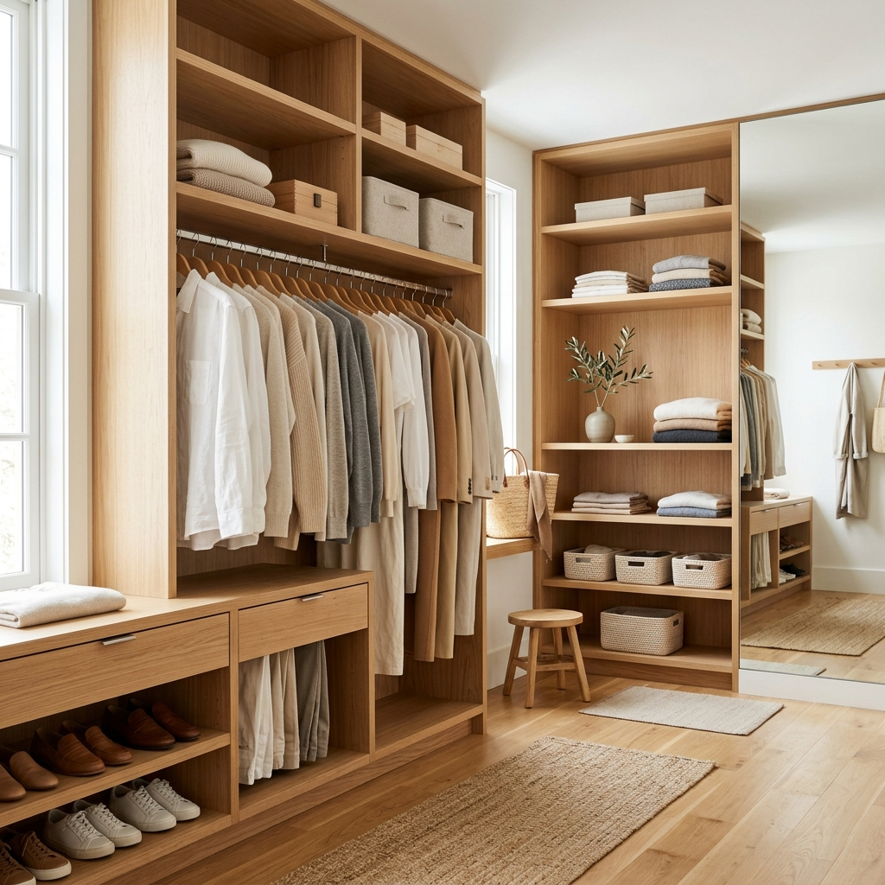
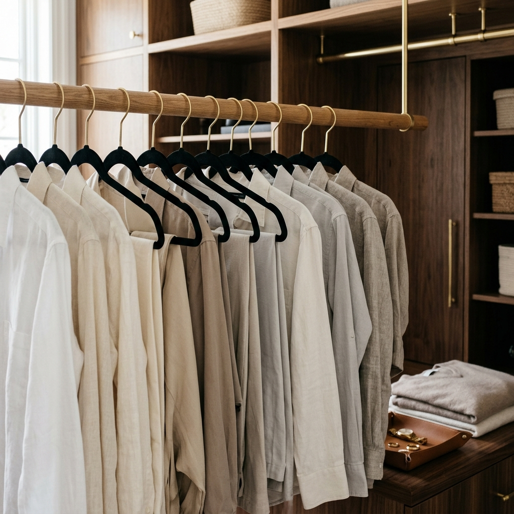
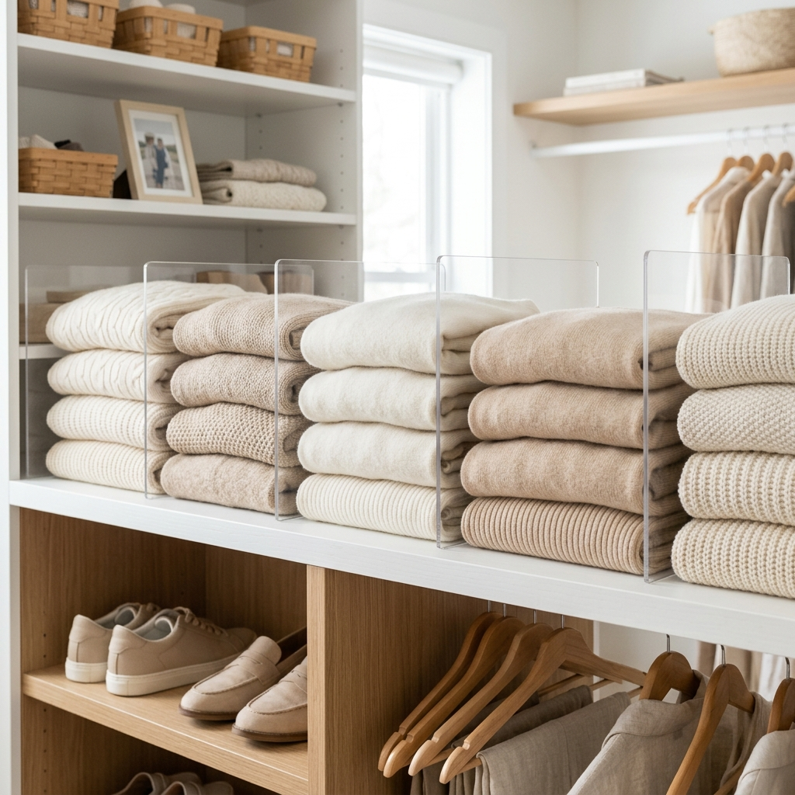
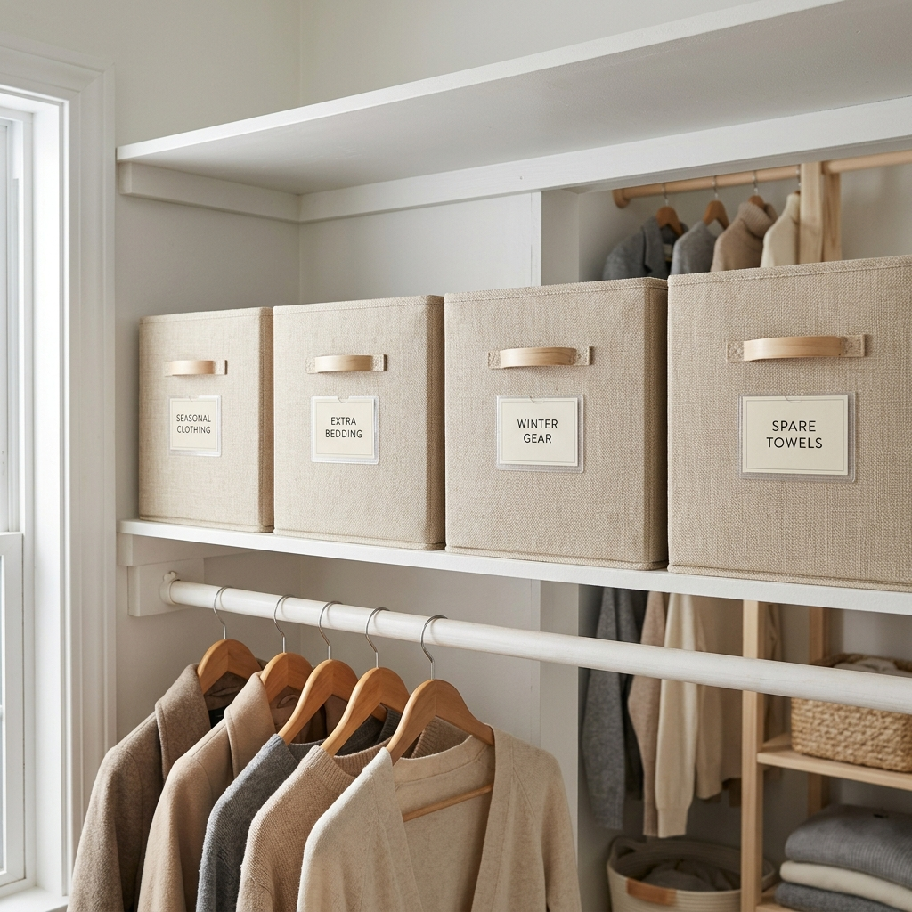
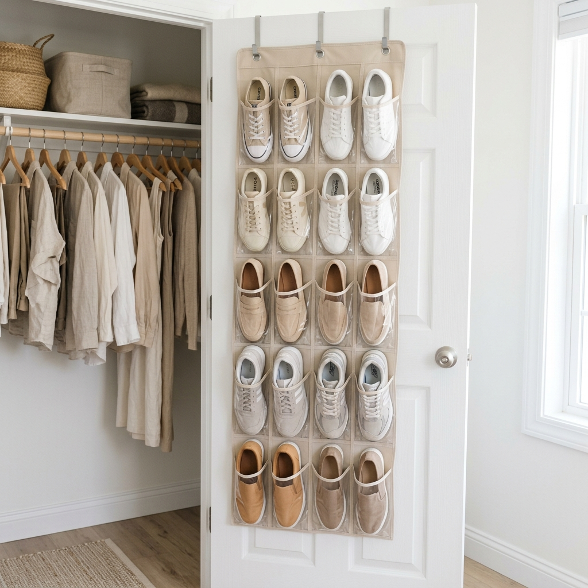
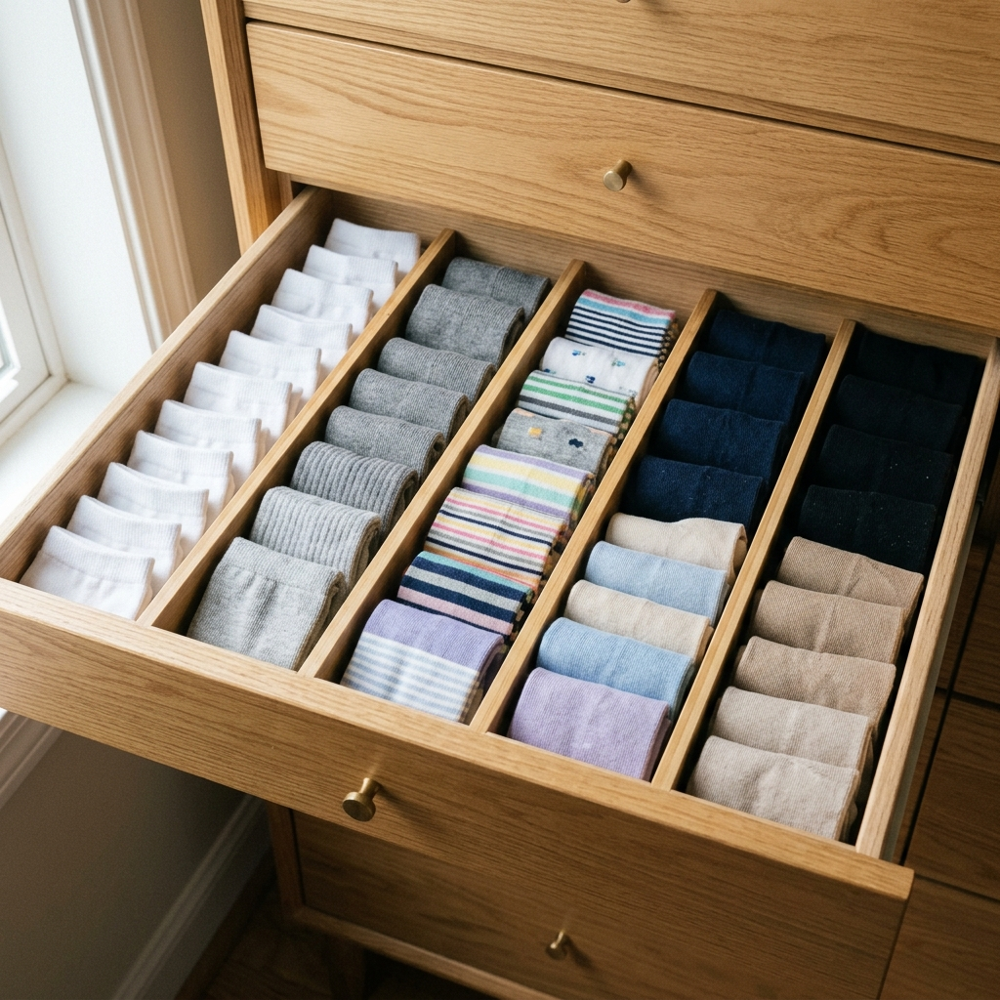
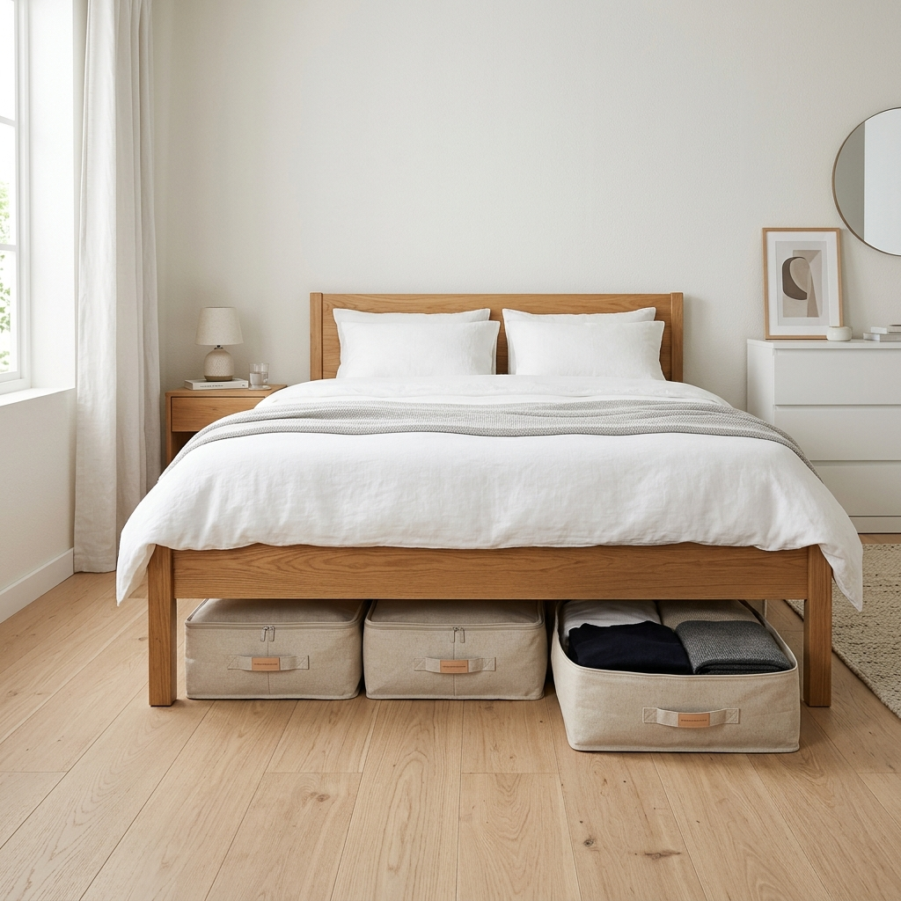
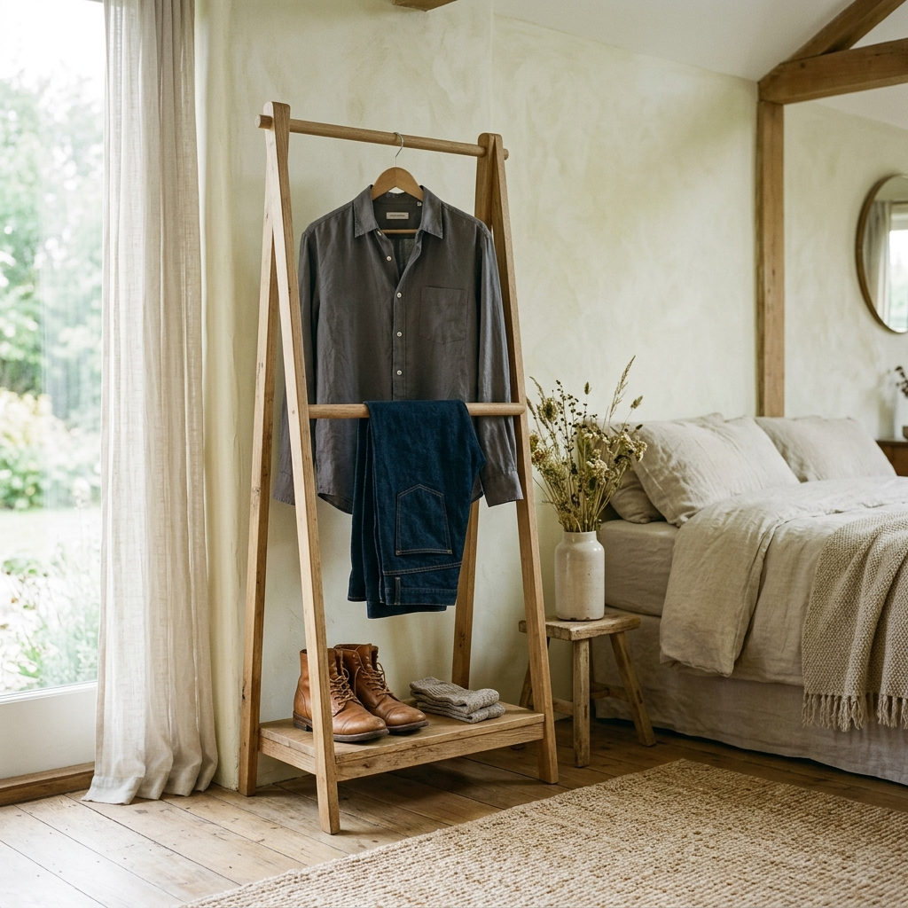

The Minimalist Way to Declutter Your Wardrobe Forever
Drowning in clothes but have nothing to wear? Learn the minimalist method to declutter your wardrobe forever, build a capsule closet, and organize your space.
Let’s be brutally honest for a second. How many times have you stood in front of a closet overflowing with clothes, stared blankly into the abyss, and said out loud, “I have absolutely nothing to wear”?
If you’re nodding your head right now, trust me, you are not alone. It is the great paradox of modern living: we own more clothing than any generation in human history, yet getting dressed in the morning feels like solving a complex mathematical equation.
The problem isn't that you don't have enough clothes. The problem is that your closet has become a graveyard of past identities, impulse buys, and "maybe someday" outfits. It’s loud, it’s chaotic, and it’s draining your energy before you even pour your morning coffee.
"The problem isn't that you don't have enough clothes. The problem is that your closet has become a graveyard of past identities."
But what if opening your closet felt like walking into a high-end boutique? What if every single item hanging there fit you perfectly, made you feel incredibly confident, and paired effortlessly with everything else? That is the power of a minimalist wardrobe.
This isn't about throwing away everything you own and living with exactly three grey t-shirts (unless that's your vibe, then go for it!). The minimalist way to declutter your wardrobe is about intentionality. If you are ready to stop stressing over what to wear and finally reclaim your closet space, let’s dive into the ultimate guide to decluttering your wardrobe forever.

Phase 1: The Emotional Preparation
Before we start pulling clothes off hangers, we need to talk about why this is so hard. Decluttering a closet is rarely a physical struggle; it’s almost entirely emotional.
Our clothes are deeply tied to our memories, our aspirations, and our insecurities. You aren't just throwing away a pair of jeans; you are letting go of the version of yourself that fit into those jeans five years ago. To successfully declutter, you have to adopt a ruthless but forgiving mindset.
- Forgive the wasted money: The money is already gone. Keeping the item in your closet as a daily guilt-trip won't refund your bank account.
- Embrace your current body: Dress the body you have today, not the body you hope to have next year. You deserve clothes that fit you right now.
- Accept your real lifestyle: You might love the idea of wearing sequin blazers, but if you work from home, your closet needs to reflect reality, not a movie script.
Phase 2: The "Burn It Down" Method (The Purge)
You cannot declutter a closet by shuffling hangers around. You have to create a blank slate. We call this the "Burn It Down" method (don't worry, no actual fire is involved).
Step 1: Empty Everything
Take every single item of clothing out of your closet. Yes, everything. The dresses, the coats, the shoes hiding in the back corner. Throw it all on your bed. Your closet should be completely, echoing empty. Take a moment to wipe down the shelves, vacuum the floor, and appreciate the empty space.
Step 2: The Four Piles
Now, pick up every single item from the mountain on your bed and sort it into one of four piles. You must make a split-second decision.
- Pile 1: The "Absolute Yes" (Keep) - These are the pieces you wear constantly. They fit perfectly and make you feel amazing.
- Pile 2: The "No" (Donate/Sell) - It doesn't fit, it's itchy, or you haven't worn it in over a year. Let it go.
- Pile 3: The "Maybe" (The Purgatory Box) - This is for items you are struggling with. Put these in a box under your bed. If you don't open the box in 3 months, donate it without looking inside.
- Pile 4: The "Trash" (Recycle) - Anything stained or torn beyond repair.
Phase 3: Building the Foundation (The Capsule Concept)
Now that you are left with only the clothes you actually love, it’s time to rebuild. A minimalist wardrobe heavily borrows from the concept of a "Capsule Wardrobe"—a curated collection of versatile, high-quality items that can be mixed and matched effortlessly.
THE RULE OF VERSATILITY
Before you hang an item back up, ask yourself: Can I wear this with at least three other things I own? If the answer is no, it’s an orphan piece. Stick to a cohesive color palette (2-3 neutrals, 1-2 accent colors) to make getting dressed in the dark incredibly easy.
📋 Phase 4: Organizing the Sanctuary (Shop The Look)
You’ve curated a beautiful collection of clothes. Now, you need to store them in a way that respects the items and makes your life easier. Aesthetic organization isn't just about looking good; it's about reducing visual friction.
Matching Velvet Hangers
Nothing makes a closet look chaotic faster than a mismatched jumble of wire, plastic, and wooden hangers. Upgrading to a single set of slim, matching velvet hangers is the quickest, cheapest way to make your closet look like a luxury boutique. Plus, they prevent your silk shirts from slipping off.

Recommended: Velvet Non Slip Hangers Matching Set
Clear Acrylic Dividers
If you stack sweaters or jeans on open shelves, you know the pain of pulling one item from the bottom and watching the whole tower collapse. Clear acrylic shelf dividers keep your stacks perfectly vertical and neatly separated without adding visual bulk.

Recommended: Clear Acrylic Shelf Dividers for Closet
Neutral Fabric Bins
Not everything belongs on a hanger. Items like workout gear, swimsuits, or seasonal accessories can look messy. Store these in matching, neutral fabric storage bins. It hides the visual clutter and keeps categories beautifully contained on the upper shelves.

Recommended: Fabric Storage Bins with Labels Neutral
Minimalist Shoe Organizer
Shoes piled arbitrarily on the closet floor instantly ruin the aesthetic. If you are short on floor space, utilize the back of your closet door. An over-the-door shoe organizer gets them off the ground and displays them clearly so you aren't digging through a dark pile.

Recommended: Over The Door Shoe Organizer Minimalist
Bamboo Drawer Dividers
Drawers often become the "junk drawer" of our wardrobe, housing a tangled mess of socks and undergarments. Spring-loaded bamboo drawer dividers allow you to customize compartments, forcing you to keep things folded and separated properly.

Recommended: Drawer Organizer Dividers Bamboo
Underbed Storage Bags
A true minimalist closet only holds the clothes you can wear right now. Seeing heavy winter coats in the middle of July causes visual fatigue. Pack out-of-season clothing into breathable, low-profile bags and slide them under your bed. Out of sight, out of mind.

Recommended: Underbed Storage Bags Low Profile
Wooden Valet Stand
This is a minimalist secret weapon. Instead of throwing your worn-but-not-dirty clothes on "the chair" in the corner of your bedroom, or struggling to plan an outfit in the morning rush, use a wooden valet stand or a small minimalist clothing rack. Plan your outfit the night before and hang it there.

Recommended: Foldable Valet Stand or Clothing Rack Wood
Phase 5: The "One-In, One-Out" Rule
Congratulations! You now have a perfectly decluttered, beautifully organized, highly functional wardrobe. Opening your closet doors should feel like taking a deep breath of fresh air.
But how do you keep it this way? The universe hates a vacuum, and empty space in a closet has a funny way of filling itself back up with impulse buys.
To maintain your new minimalist sanctuary, you must adopt the "One-In, One-Out" rule. For every new piece of clothing you bring into your home, an old piece must leave. Buy a new sweater? An old sweater gets donated. This simple rule forces you to critically evaluate every new purchase.
Your wardrobe shouldn't be a source of daily anxiety. It should be a curated toolkit that helps you present your best self to the world with zero friction. Now, go put on your favorite outfit, and enjoy your beautiful new space!